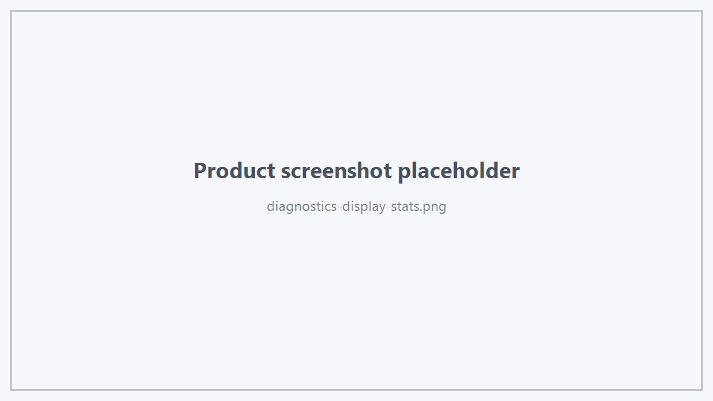

Hts Viewer SDK 提供面向应用和技术支持的公开诊断摘要接口。
1. Debug
viewer.setDebugEnabled(true);
Debug 输出内容以当前 SDK 版本为准。
2. Display Stats
std::string stats = viewer.displayStatsText();
可用于：
- Demo 控制台；
- 问题反馈；
- 性能测试记录；
- 技术支持。

Display Stats
3. Selection Summary
std::string summary = viewer.selectionSummary();
适合调试当前 Selection 语义。
4. Hover Summary
std::string summary = viewer.hoverSummary();
5. 问题反馈建议
反馈 Viewer 问题时建议同时提供：
- Hts Viewer SDK 版本；
- Windows / Linux 版本；
- GPU 与驱动；
- 编译器版本；
- Demo 或 Sample 名称；
- 复现步骤；
- displayStatsText()；
- Viewer 日志；
- 截图或录屏。
6. 商业信息保护
不要在对外问题单中附带：
- Viewer 私有源码；
- 内部场景树 dump；
- 内部 Shader；
- 客户授权文件；
- 完整机器码；
- 客户敏感 CAD 数据。
优先使用可复现的脱敏模型或官方 Sample。
 1.18.0
1.18.0